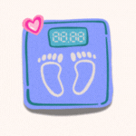

Kalkulator BMI
...
Keputusan:
...
Tinggi (cm):
Berat (kg):
Kira
Apa Itu BMI (Indeks Jisim Badan)?
Ia ialah ukuran untuk menilai sama ada seseorang mempunyai
berat badan yang sihat berdasarkan ketinggiannya.
Kategori:
✘ Kurang Berat: BMI di bawah 18.5
✔ Berat Normal: BMI antara 18.5 hingga 24.9
✘ Lebih Berat: BMI antara 25 hingga 29.9
✘ Obes: BMI 30 ke atas